pacman::p_load(readxl, sf, tidyverse, tmap, sfdep, gifski, dplyr, lubridate, ggplot2, spdep, plotly)Take-home Exercise 2: Application of Spatial and Spatio-temporal Analysis Methods to Discover the Distribution of Dengue Fever in Tainan City, Taiwan
1 Introduction
1.1 Setting the Scene
Dengue Hemorrhagic Fever (in short dengue fever) is one of the most widespread mosquito-borne diseases in the most tropical and subtropical regions. It is an acute disease caused by dengue virus infection which is transmitted by female Aedes aegypti and Aedes albopictus mosquitoes. In 2015, Taiwan had recorded the most severe dengue fever outbreak with more than 43,000 dengue cases and 228 deaths. Since then, the annual reported dengue fever cases were maintained at the level of not more than 200 cases.
2 Preparing the data
2.1 Loading the packages and importing data
The following R packages are used for this assignment:
sf: for importing, manipulating and processing geospatial data
tmap: to create thematic maps
tidyverse: a family of modern R packages specially designed to meet the tasks of Data Science in R
- tidyr: an R package for tidying data
- dplyr: a grammer of data manipulation
- ggplot2: a grammar of graphics
2.1.1 Importing Tainan Village Data
TAIWAN_VILLAGE_2020: a geospatial data of village boundary of Taiwan. It is in ESRI shapefile format. The data is in Taiwan Geographic Coordinate System.
tv <- st_read(dsn = "data/geospatial", layer = "TAINAN_VILLAGE")Reading layer `TAINAN_VILLAGE' from data source
`/Users/shanellelam/Library/CloudStorage/OneDrive-SingaporeManagementUniversity/School/Year 3/chanelelele/IS415-GAA/Take-home_Ex/Take-home_Ex02/data/geospatial'
using driver `ESRI Shapefile'
Simple feature collection with 649 features and 10 fields
Geometry type: POLYGON
Dimension: XY
Bounding box: xmin: 120.0269 ymin: 22.88751 xmax: 120.6563 ymax: 23.41374
Geodetic CRS: TWD972.1.2 Importing Daily Dengue Data
Dengue_Daily: an aspatial data of reported dengue cases in Taiwan since 1998.
dengue_daily <- st_read(dsn = "data/aspatial/Dengue_Daily.csv")Reading layer `Dengue_Daily' from data source
`/Users/shanellelam/Library/CloudStorage/OneDrive-SingaporeManagementUniversity/School/Year 3/chanelelele/IS415-GAA/Take-home_Ex/Take-home_Ex02/data/aspatial/Dengue_Daily.csv'
using driver `CSV'2.2 Preparing the Geospatial Data
Firstly, to create a thematic map of the Tainan Villages dataset by adding borders to highlight the boundaries of the geographic features.
tmap_mode("plot")
tm_shape(tv) +
tm_borders()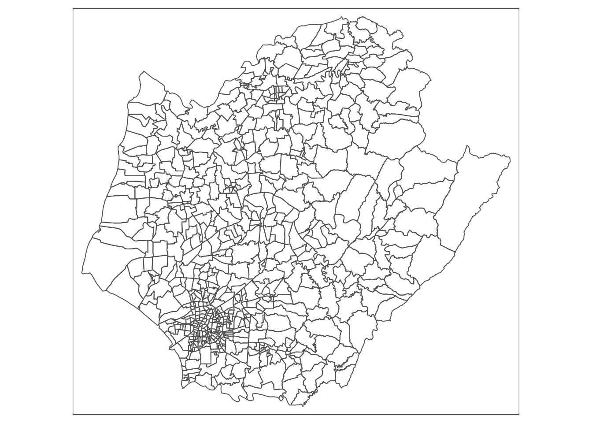
We are only looking to study the villages that are confined to the D01, D02, D04, D06, D07, D08, D32 and D39 counties of Tainan City, Taiwan. Therefore, we are filtering the dataset by the variable TOWNID in order to extract only counties that we are interested in.
tmap_mode("plot")
tm_shape(filter(tv, tv$TOWNID == "D01" | tv$TOWNID == "D02" | tv$TOWNID == "D04" | tv$TOWNID == "D06" | tv$TOWNID == "D07" | tv$TOWNID == "D08" | tv$TOWNID == "D32" | tv$TOWNID == "D39")) +
tm_fill("TOWNID") +
tm_borders()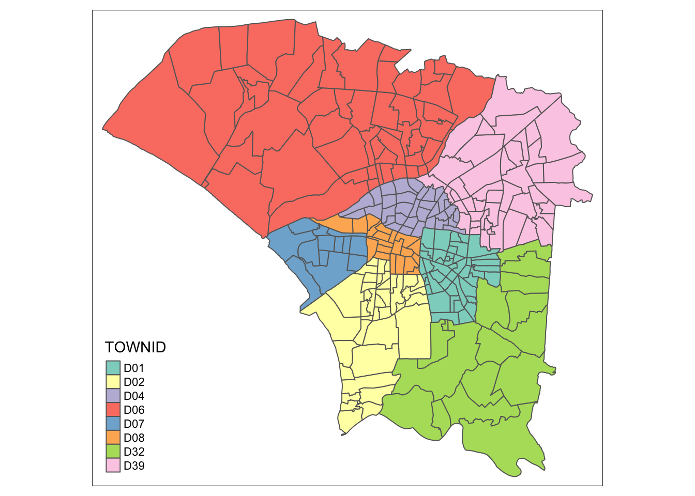
tv_ids <- c("D01", "D02", "D04", "D06", "D07", "D08", "D32", "D39")
tv_counties <- subset(tv, TOWNID %in% tv_ids)2.3 Preparing the Aspatial Data
In order to make data processing more convenient, we are renaming the following columns from Chinese to English:
dd <- dengue_daily %>% rename("Onset_Date" = "發病日",
"x-coordinate" = "最小統計區中心點X",
"y-coordinate" = "最小統計區中心點Y",
"village" = "居住村里",
"town" = "居住縣市")I am only looking to study the dengue fever cases that are confined to epidemiology weeks 31-50 in the year 2023. Therefore, the dengue cases dataset is being filtered and extracted according to the time period that we are interested in. However, it is important to note that since the first day of the week in Taiwan is a Sunday, the dates that need to be extracted are as follows: Week 31 - 50: 30 July 2023 - 16 December 2023
With reference to: http://chartsbin.com/view/41671
dd_filter <- dd %>%
filter(Onset_Date >= as.Date("2023/07/30") & Onset_Date <= as.Date("2023/12/16"))The following code block creates a new column in the dataset called week, reflecting which week the dengue fever cases belong to.
dd_filter <- dd_filter %>%
mutate(year = factor(year(Onset_Date)),
week = week(Onset_Date)) %>%
filter(Onset_Date >= "2023/07/30" & Onset_Date <= "2023/12/16")2.4 Combining the datasets
Next, I merged the two datasets using a left join operation, where the village name columns serve as the key to combine the data from both datasets.
tv_dd <- left_join(tv_counties, dd_filter,
by = c("VILLNAME" = "village"))Next, I created a new dataframe that groups the tv_dd dataframe by the variable “VILLENG”. It then calculates the count of observations within each group and stores it in a new column named “grp_cnt”.
village_sf <- tv_dd %>%
group_by(VILLENG) %>%
summarize(grp_cnt = n(), .groups = "drop")
# View the first few rows of the new data frame
head(village_sf)Simple feature collection with 6 features and 2 fields
Geometry type: POLYGON
Dimension: XY
Bounding box: xmin: 120.1926 ymin: 23.01258 xmax: 120.2308 ymax: 23.05601
Geodetic CRS: TWD97
# A tibble: 6 × 3
VILLENG grp_cnt geometry
<chr> <int> <POLYGON [°]>
1 Andong Vil. 83 ((120.2164 23.0404, 120.2154 23.04033, 120.2153 23.04017,…
2 Anfu Vil. 311 ((120.1932 23.0294, 120.1929 23.02938, 120.1926 23.02936,…
3 Anhe Vil. 86 ((120.2258 23.04424, 120.2219 23.03862, 120.2219 23.03862…
4 Ankang Vil. 102 ((120.2269 23.01413, 120.2274 23.01331, 120.2277 23.01289…
5 Anqing Vil. 109 ((120.2113 23.04414, 120.2111 23.04413, 120.2108 23.04413…
6 Anshun Vil. 35 ((120.2136 23.05601, 120.2136 23.05586, 120.2135 23.05531…Next, I created a new dataframe that groups the tv_dd dataframe by the variables “week” and “VILLENG”. Similarly, it calculates the count of observations within each group and stores it in a new column named “grp_cnt”.
df <- tv_dd %>%
group_by(week, VILLENG) %>%
summarize(grp_cnt = n(), .groups = "drop")
# View the first few rows of the new data frame
head(df)Simple feature collection with 6 features and 3 fields
Geometry type: GEOMETRY
Dimension: XY
Bounding box: xmin: 120.1926 ymin: 22.9156 xmax: 120.2585 ymax: 23.0404
Geodetic CRS: TWD97
# A tibble: 6 × 4
week VILLENG grp_cnt geometry
<dbl> <chr> <int> <GEOMETRY [°]>
1 31 Andong Vil. 1 POLYGON ((120.2164 23.0404, 120.2154 23.04033, 1…
2 31 Anfu Vil. 1 POLYGON ((120.1932 23.0294, 120.1929 23.02938, 1…
3 31 Ankang Vil. 2 POLYGON ((120.2269 23.01413, 120.2274 23.01331, …
4 31 Bao'an Vil. 1 POLYGON ((120.2304 22.93544, 120.2301 22.93511, …
5 31 Chengde Vil. 3 POLYGON ((120.2036 23.01244, 120.2031 23.01238, …
6 31 Chenggong Vil. 27 MULTIPOLYGON (((120.2388 23.00454, 120.2388 23.0…The first chunk of code creates a new dataframe complete_df using the expand.grid() function, which generates a data frame from all combinations of the supplied vectors or factors. In this case, it creates combinations of weeks ranging from 31 to 50 for each unique village ID (“VILLENG”) extracted from the df dataframe.
Then, it performs a left join with the df dataframe to fill in the grp_cnt values for each combination of week and village ID. Missing values in the grp_cnt column are replaced with 0 using the ifelse() function. Finally, it merges geometry information from the village_sf dataframe based on the VILLENG variable, resulting in the dengue_sf dataframe.
complete_df <- expand.grid(week = 31:50, VILLENG = unique(df$VILLENG))
# Left join with df to fill in grp_cnt values
dengue_sf <- left_join(complete_df, df, by = c("week", "VILLENG")) %>%
mutate(grp_cnt = ifelse(is.na(grp_cnt), 0, grp_cnt)) # Replace NA values with 0
# Merge geometry information from village_sf based on VILLENG
dengue_sf <- dengue_sf %>%
left_join(select(village_sf, VILLENG, geometry), by = "VILLENG")# Select geometry.y column as geometry and drop geometry.x column
dengue_sf <- dengue_sf %>%
select(-geometry.x, geometry = geometry.y)The following code chunk generates a bar plot using ggplot2. It visualizes the number of cases by week.
ggplot(tv_dd, aes(x = week)) +
geom_bar(fill = "skyblue", color = "black") +
labs(title = "Number of Cases by Week",
x = "Week",
y = "Number of Cases")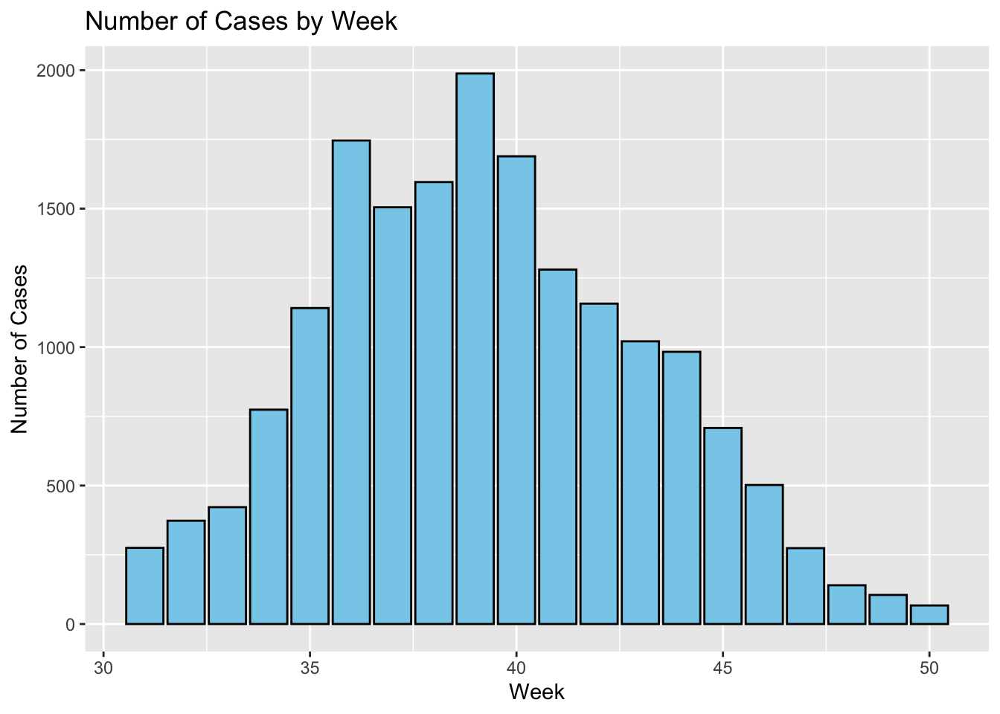
From the bar graph, it indicates an increasing trend from week 30 to week 39. It then reached the highest number of dengue cases outbreak in week 39 before gradually decreasing all the way till week 50.
According to research, this pattern is often seen in infectious disease outbreaks. It suggests that there was a period of heightened transmission leading to the peak of the outbreak, followed by a decline as control measures or natural factors that may mitigate the spread of the disease.
ggplot(dengue_sf, aes(x = week, y = grp_cnt)) +
geom_bar(stat = "identity", fill = "skyblue", color = "black") +
labs(title = "Number of Cases by Village",
x = "VILLENG",
y = "Number of Cases")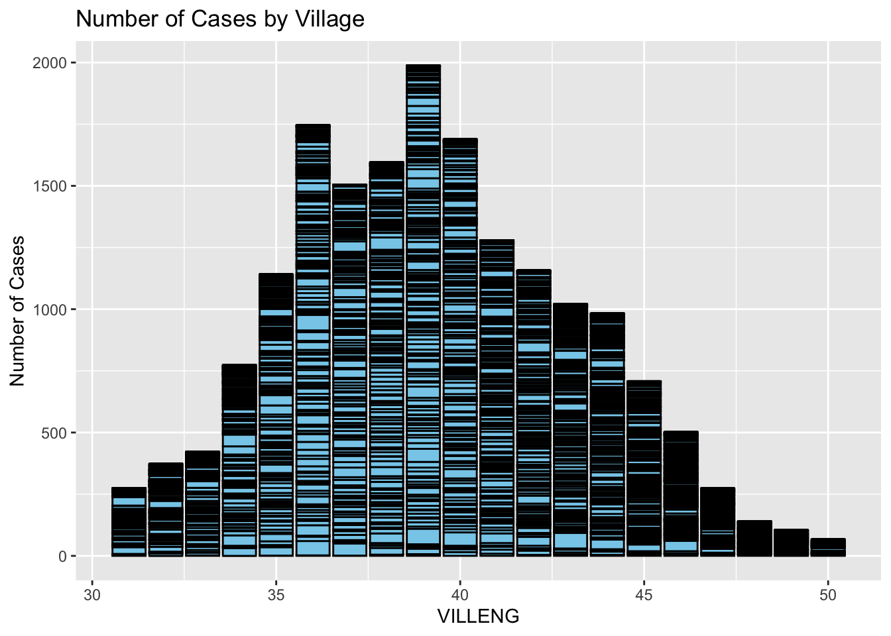
The following code chunk creates a thematic map that displays the distribution of dengue cases by village in Tainan, Taiwan. The color of each village on the map represents the number of dengue cases reported, with darker shades indicating higher case counts.
tmap_mode("plot")
tm_shape(village_sf) +
tm_fill("grp_cnt",
style = "quantile",
palette = "Blues",
title = "Village") +
tm_layout(main.title = "Distribution of Dengue Cases by Village, Tainan",
main.title.position = "center",
main.title.size = 1.2,
legend.height = 0.60,
legend.width = 0.50,
frame = TRUE) +
tm_borders(alpha = 0.5) +
tm_compass(type="8star", size = 2) +
tm_scale_bar() +
tm_grid(alpha =0.2)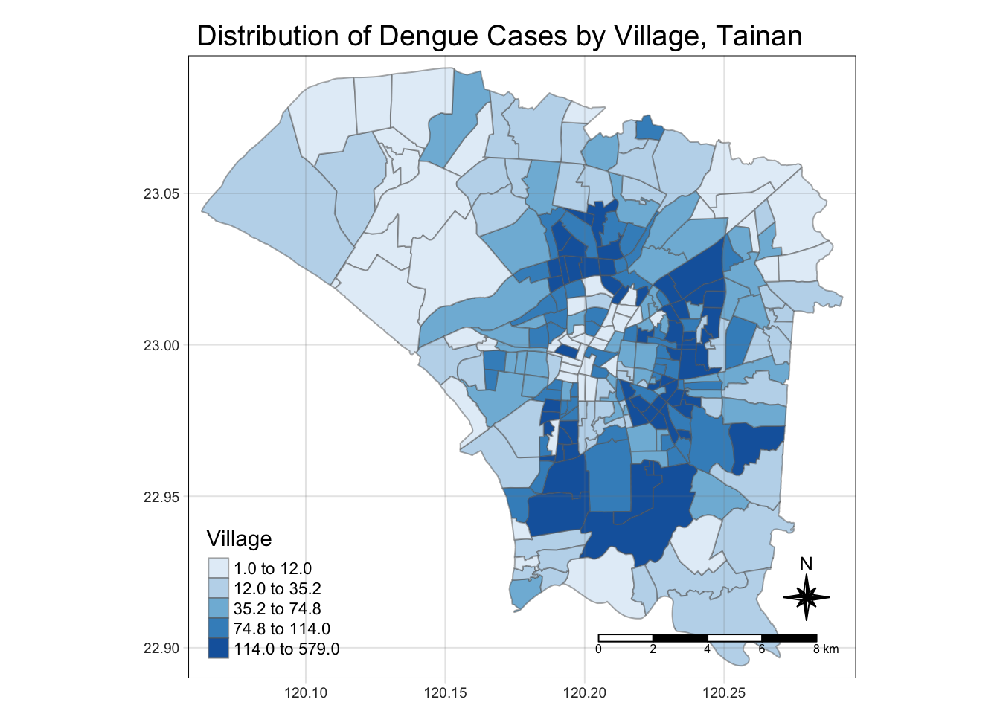
From the thematic map, it’s evident that the regions experiencing the highest incidences of dengue outbreaks are concentrated in the central and southern areas of our study area. This spatial pattern suggests a clustering of dengue cases in specific geographic locations rather than a uniform distribution across the entire area.
equal <- tm_shape(tv_dd) +
tm_fill("VILLENG",
n = 5,
style = "equal") +
tm_borders(alpha = 0.5) +
tm_layout(main.title = "Equal interval classification")
quantile <- tm_shape(tv_dd) +
tm_fill("VILLENG",
n = 5,
style = "quantile") +
tm_borders(alpha = 0.5) +
tm_layout(main.title = "Equal quantile classification")
tmap_arrange(equal,
quantile,
asp=1,
ncol=2)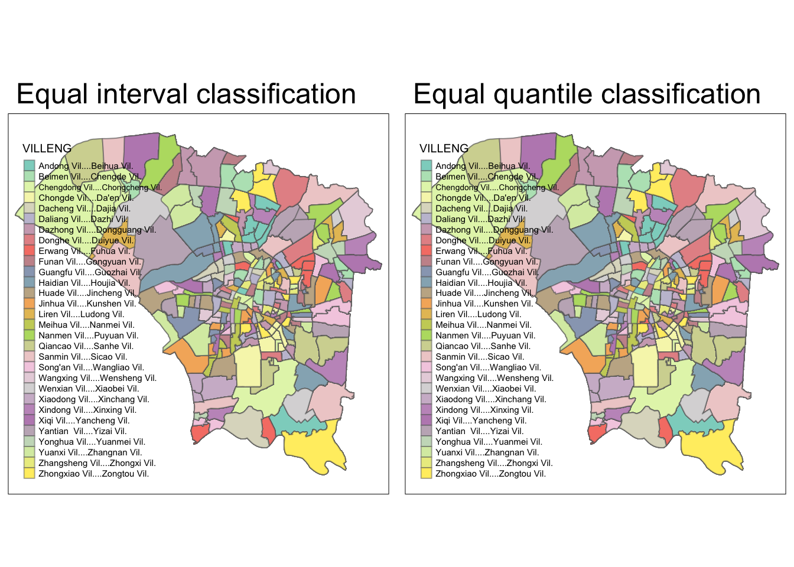
3 Spacetime s3 class
The spacetime class links a dataframe and an sf object based on a shared location identifier column. These are referred to as the data context and the geometry context.
Four important aspects to the spacetime class:
the data: dd (a dataframe object)
the geometry: tv_counties (an sf object)
the location identifiers:
the time column:
spt <- sfdep::spacetime(
.data = dengue_sf,
.geometry = village_sf,
.loc_col = "VILLNAME",
.time_col = "week"
)# Convert polygons/multipolygons to points
spt$geometry_point <- st_centroid(spt$geometry)4 Global Spatial Autocorrelation
Spatial autocorrelation is the term used to describe the presence of systematic spatial variation in a variable.
Hypotheses:
Null Hypothesis: The map suggests that the outbreak of dengue cases occurred randomly over space. (complete spatial randomness)
Alternative Hypothesis: The map suggests that the outbreak of dengue cases occurred in a non-random pattern over space (spatially clustered)
4.1 Deriving contiguity weights: Queen’s method
wm_q <- village_sf %>%
mutate(nb = st_contiguity(geometry),
wt = st_weights(nb,
style = "W"),
.before = 1) wm_qSimple feature collection with 249 features and 4 fields
Geometry type: GEOMETRY
Dimension: XY
Bounding box: xmin: 120.0627 ymin: 22.89401 xmax: 120.2925 ymax: 23.09144
Geodetic CRS: TWD97
# A tibble: 249 × 5
nb wt VILLENG grp_cnt geometry
* <nb> <list> <chr> <int> <POLYGON [°]>
1 <int [5]> <dbl [5]> Andong Vil. 83 ((120.2164 23.0404, 120.2154 23.0403…
2 <int [5]> <dbl [5]> Anfu Vil. 311 ((120.1932 23.0294, 120.1929 23.0293…
3 <int [7]> <dbl [7]> Anhe Vil. 86 ((120.2258 23.04424, 120.2219 23.038…
4 <int [3]> <dbl [3]> Ankang Vil. 102 ((120.2269 23.01413, 120.2274 23.013…
5 <int [4]> <dbl [4]> Anqing Vil. 109 ((120.2113 23.04414, 120.2111 23.044…
6 <int [3]> <dbl [3]> Anshun Vil. 35 ((120.2136 23.05601, 120.2136 23.055…
7 <int [8]> <dbl [8]> Anxi Vil. 141 ((120.2123 23.03689, 120.212 23.0368…
8 <int [5]> <dbl [5]> Bao'an Vil. 33 ((120.2304 22.93544, 120.2301 22.935…
9 <int [6]> <dbl [6]> Beihua Vil. 1 ((120.2034 23.00257, 120.2032 23.002…
10 <int [4]> <dbl [4]> Beimen Vil. 8 ((120.2176 23.02032, 120.2173 23.020…
# ℹ 239 more rowsglobal_moran_test(wm_q$grp_cnt,
wm_q$nb,
wm_q$wt)
Moran I test under randomisation
data: x
weights: listw
Moran I statistic standard deviate = 8.6483, p-value < 2.2e-16
alternative hypothesis: greater
sample estimates:
Moran I statistic Expectation Variance
0.309827683 -0.004032258 0.001317068 From the Moran I test, the statistic standard deviate value (z-value) is 8.6483. This value represents the number of standard deviations the observed Moran’s I statistic deviates from the expected value under the null hypothesis of spatial randomness.
Therefore, the z-value of 8.6483 and a very low p-value (< 2.2e-16), there is strong evidence to reject the null hypothesis of spatial randomness. This suggests that the outbreaks are not randomly distributed but rather exhibit spatial clustering, where areas with high dengue activity tend to be geographically close to each other.
set.seed(1234)The following code chunk uses the global_moran_perm function that computes the global Moran’s I statistic for spatial autocorrelation using permutation tests. This function conducts a permutation test to assess the significance of the Moran’s I statistic.
global_moran_perm(wm_q$grp_cnt,
wm_q$nb,
wm_q$wt,
nsim = 99)
Monte-Carlo simulation of Moran I
data: x
weights: listw
number of simulations + 1: 100
statistic = 0.30983, observed rank = 100, p-value < 2.2e-16
alternative hypothesis: two.sidedThe calculated p-value of < 2.2e-16 indicates a strong evidence against the null hypothesis of spatial randomness. Therefore, suggesting that there is a significant spatial autocorrelation present in the data.
5 Local Spatial Autocorrelation Analysis
5.1 Computing Contiguity Spatial Weights
The following code chunk uses the poly2nb() function of the spdep package to compute contiguity weight matrices for the study area. This function builds a neighbours list based on regions with contiguous boundaries. Therefore, it computes the Queen contiguity weight matrix.
wm_q2 <- poly2nb(village_sf,
queen=TRUE)
summary(wm_q2)Neighbour list object:
Number of regions: 249
Number of nonzero links: 1522
Percentage nonzero weights: 2.454799
Average number of links: 6.11245
Link number distribution:
2 3 4 5 6 7 8 9 10 11 12 13 22
4 15 43 47 46 38 26 13 7 6 2 1 1
4 least connected regions:
72 81 84 243 with 2 links
1 most connected region:
19 with 22 linksThe summary report above shows that there are 249 area units in our Tainan study area. The most connected area unit has 22 neighbours. There are 4 area units with only 2 neighbours.
5.2 Row-standardised weights matrix
The following code chunk assigns weights to each neighbouring polygon. he nb2listw function is used to create this matrix, specifying the style as “W” for equal weighting.
rswm_q <- nb2listw(wm_q2,
style="W",
zero.policy = TRUE)The following code chunk computes local Moran’s I statistics for the variable grp_cnt in the dataset village_sf, using the spatial weights matrix rswm_q previously generated. The local moran’s I statistic is computed using the localmoran() function directly from the spdep package. This function calculates local Moran’s I without the need for explicitly defining a spatial weights matrix. Instead, it derives the spatial weights internally based on the neighborhood structure specified by nb.
fips <- order(village_sf$VILLENG)
localMI <- localmoran(village_sf$grp_cnt, rswm_q)
head(localMI) Ii E.Ii Var.Ii Z.Ii Pr(z != E(Ii))
1 0.06678456 -9.831024e-05 0.004816092 0.9637569 0.3351678
2 2.72035266 -4.184340e-02 1.964274101 1.9708495 0.0487411
3 0.01294335 -1.556562e-04 0.005401571 0.1782289 0.8585432
4 0.26530641 -6.830524e-04 0.056195885 1.1220499 0.2618412
5 0.22172647 -1.031123e-03 0.063342426 0.8850854 0.3761106
6 0.23051374 -9.648473e-04 0.079357246 0.8217080 0.4112431The following code chunk prints the local Moran’s I statistics calculated earlier in a formatted coefficient matrix. It arranges the statistics corresponding to each village (VILLENG) in the same order as the fips variable, which represents the sorted order of villages.
printCoefmat(data.frame(
localMI[fips,],
row.names=village_sf$VILLENG[fips]),
check.names=FALSE) Ii E.Ii Var.Ii Z.Ii Pr.z....E.Ii..
Andong Vil. 6.6785e-02 -9.8310e-05 4.8161e-03 9.6376e-01 0.3352
Anfu Vil. 2.7204e+00 -4.1843e-02 1.9643e+00 1.9708e+00 0.0487
Anhe Vil. 1.2943e-02 -1.5566e-04 5.4016e-03 1.7823e-01 0.8585
Ankang Vil. 2.6531e-01 -6.8305e-04 5.6196e-02 1.1220e+00 0.2618
Anqing Vil. 2.2173e-01 -1.0311e-03 6.3342e-02 8.8509e-01 0.3761
Anshun Vil. 2.3051e-01 -9.6485e-04 7.9357e-02 8.2171e-01 0.4112
Anxi Vil. 5.5348e-01 -3.5318e-03 1.0644e-01 1.7073e+00 0.0878
Bao'an Vil. -3.9417e-01 -1.0738e-03 5.2554e-02 -1.7147e+00 0.0864
Beihua Vil. 3.3566e-01 -3.6105e-03 1.4627e-01 8.8709e-01 0.3750
Beimen Vil. -2.7340e-01 -2.9281e-03 1.7953e-01 -6.3833e-01 0.5233
Beiwan Vil. 5.0771e-01 -2.2356e-03 1.8364e-01 1.1900e+00 0.2341
Beixing Vil. 4.2059e-01 -2.5702e-03 1.2560e-01 1.1940e+00 0.2325
Budai Vil. 2.5596e-01 -8.6169e-04 4.2181e-02 1.2505e+00 0.2111
Chang'an Vil. 4.2479e-01 -1.5012e-03 7.3438e-02 1.5731e+00 0.1157
Chengbei Vil. 7.0476e-01 -3.1158e-03 1.9100e-01 1.6197e+00 0.1053
Chengda Vil. -5.8798e-03 -1.7251e-04 5.2165e-03 -7.9021e-02 0.9370
Chengde Vil. -1.6149e-01 -2.8038e-04 1.1397e-02 -1.5100e+00 0.1310
Chengdong Vil. 7.1054e-01 -3.2118e-03 1.3017e-01 1.9783e+00 0.0479
Chenggong Vil. 1.6369e+00 -1.8779e-01 1.5795e+00 1.4519e+00 0.1465
Chenghuang Vil. 1.4908e-01 -3.6105e-03 1.4627e-01 3.9924e-01 0.6897
Chengnan Vil. 7.1411e-01 -2.4843e-03 8.6011e-02 2.4434e+00 0.0145
Chengxi Vil. 6.9702e-01 -2.4843e-03 2.0402e-01 1.5486e+00 0.1215
Chengzhong Vil. 8.1684e-01 -3.5086e-03 2.1500e-01 1.7692e+00 0.0769
Chihkan Vil. -3.2227e-01 -1.1437e-03 3.4549e-02 -1.7277e+00 0.0840
Chongcheng Vil. -1.5001e-01 -2.7388e-04 1.3415e-02 -1.2928e+00 0.1961
Chongde Vil. 9.4061e-01 -1.1869e-02 4.7685e-01 1.3793e+00 0.1678
Chonghui Vil. 3.0609e-02 -2.2612e-04 9.1920e-03 3.2162e-01 0.7477
Chongming Vil. -8.6086e-02 -3.0286e-04 9.1567e-03 -8.9646e-01 0.3700
Chongshan Vil. 1.3557e+00 -7.5251e-03 1.7919e-01 3.2203e+00 0.0013
Chongwen Vil. 7.5816e-02 -2.2612e-04 1.1076e-02 7.2255e-01 0.4700
Chongxin Vil. 9.2532e-01 -3.4311e-03 1.0341e-01 2.8881e+00 0.0039
Chongxue Vil. 5.4445e-01 -2.0949e-03 7.2556e-02 2.0290e+00 0.0425
Da'an Vil. 1.4679e+00 -3.9494e-03 1.3653e-01 3.9834e+00 0.0001
Da'en Vil. 1.1660e-01 -4.2255e-05 1.1311e-03 3.4682e+00 0.0005
Dacheng Vil. 4.6364e-02 -1.3093e-03 5.3166e-02 2.0676e-01 0.8362
Dade Vil. 5.2239e-02 -4.6965e-04 2.8867e-02 3.1023e-01 0.7564
Dafeng Vil. -6.7934e-02 -5.9672e-04 1.8036e-02 -5.0140e-01 0.6161
Dafu Vil. 4.9666e-02 -9.6485e-04 3.9193e-02 2.5575e-01 0.7981
Dagang Vil. -5.0970e-03 -5.9672e-04 2.9218e-02 -2.6328e-02 0.9790
Daguang Vil. 2.8296e-01 -3.6105e-03 1.2486e-01 8.1100e-01 0.4174
Dahe Vil. 1.0758e-01 -1.1597e-04 4.0245e-03 1.6976e+00 0.0896
Dajia Vil. -9.7380e-01 -2.8364e-03 1.7393e-01 -2.3282e+00 0.0199
Daliang Vil. 1.7525e-01 -1.0738e-03 3.2441e-02 9.7897e-01 0.3276
Dalin Vil. 1.8783e-01 -1.1305e-03 4.5914e-02 8.8183e-01 0.3779
Daqiao Vil. 6.4323e-01 -6.5240e-03 2.2495e-01 1.3699e+00 0.1707
Datong Vil. -2.5248e-02 -1.3508e-04 4.0848e-03 -3.9293e-01 0.6944
Dawan Vil. 3.6610e-01 -1.4358e-03 8.8164e-02 1.2378e+00 0.2158
Daxing Vil. 5.4133e-01 -3.6105e-03 1.4627e-01 1.4248e+00 0.1542
Daxue Vil. -6.8137e-02 -5.8721e-04 1.5711e-02 -5.3892e-01 0.5899
Dazhi Vil. 2.4606e-01 -9.8310e-05 4.8161e-03 3.5470e+00 0.0004
Dazhong Vil. -2.2462e-02 -2.2973e-05 1.4127e-03 -5.9702e-01 0.5505
Degao Vil. 4.3656e-01 -1.0311e-03 5.0466e-02 1.9479e+00 0.0514
Deguang Vil. 4.0789e-01 -1.5836e-03 7.7463e-02 1.4712e+00 0.1412
Diandong Vil. 3.9982e-01 -1.7062e-03 6.9256e-02 1.5258e+00 0.1271
Dianxi Vil. 4.9371e-01 -2.4843e-03 1.2141e-01 1.4240e+00 0.1544
Ding'an Vil. 1.5477e-01 -1.7224e-03 5.9677e-02 6.4061e-01 0.5218
Dong'an Vil. 1.0873e-03 -1.4358e-03 8.8164e-02 8.4975e-03 0.9932
Dongguang Vil. 7.1410e-02 -5.4083e-05 1.6355e-03 1.7671e+00 0.0772
Donghe Vil. 1.7051e-01 -2.0771e-03 7.1939e-02 6.4346e-01 0.5199
Dongmen Vil. 9.8319e-02 -1.7062e-03 5.9117e-02 4.1139e-01 0.6808
Dongming Vil. 6.0057e-02 -2.2612e-04 1.3902e-02 5.1128e-01 0.6092
Dongqiao Vil. 2.3066e-01 -1.3235e-03 3.5383e-02 1.2333e+00 0.2175
Dongsheng Vil. 2.8716e-01 -8.7320e-04 3.0280e-02 1.6553e+00 0.0979
Dongwan Vil. 3.2447e-01 -1.6364e-03 1.0046e-01 1.0288e+00 0.3036
Dongxing Vil. 1.0034e-01 -5.4083e-05 2.1989e-03 2.1410e+00 0.0323
Dongzhi Vil. -2.2047e-01 -1.1180e-04 3.3807e-03 -3.7900e+00 0.0002
Duiyue Vil. 5.0316e-01 -3.6105e-03 1.4627e-01 1.3250e+00 0.1852
Erwang Vil. 1.4918e+00 -9.9107e-03 3.9898e-01 2.3775e+00 0.0174
Erxing Vil. -1.4066e+00 -2.4000e-03 1.9711e-01 -3.1627e+00 0.0016
Fahua Vil. 1.6709e-01 -8.6169e-04 5.2943e-02 7.2992e-01 0.4654
Fenghuang Vil. 2.0491e-01 -6.9443e-03 4.2407e-01 3.2533e-01 0.7449
Fotan Vil. 2.5072e-01 -4.3338e-04 5.3714e-02 1.0837e+00 0.2785
Fude Vil. 1.5134e-01 -2.5702e-03 8.8975e-02 5.1597e-01 0.6059
Fuguo Vil. 1.1371e+00 -4.7362e-03 1.6360e-01 2.8230e+00 0.0048
Fuhua Vil. 2.4437e+00 -6.1975e-02 3.5749e+00 1.3252e+00 0.1851
Funan Vil. 1.1060e-01 -1.2817e-02 5.1445e-01 1.7207e-01 0.8634
Fuqian Vil. 8.1399e-01 -3.6105e-03 1.7625e-01 1.9475e+00 0.0515
Fuqiang Vil. 1.2501e+00 -1.1317e-02 2.9954e-01 2.3048e+00 0.0212
Fuxing Vil. 1.4060e+00 -8.5548e-02 1.6991e+00 1.1443e+00 0.2525
Fuyu Vil. -4.6001e-03 -1.0833e-07 5.3074e-06 -1.9967e+00 0.0459
Gongqin Vil. 5.7950e-01 -3.4082e-03 4.2117e-01 8.9820e-01 0.3691
Gongwen Vil. 5.8869e-01 -2.9281e-03 1.7953e-01 1.3963e+00 0.1626
Gongyuan Vil. -7.8937e-03 -1.8996e-06 7.7236e-05 -8.9798e-01 0.3692
Guangfu Vil. -1.5788e+00 -2.4843e-03 3.0728e-01 -2.8437e+00 0.0045
Guangming Vil. -5.1216e-02 -3.0427e-03 1.8654e-01 -1.1154e-01 0.9112
Guangxian Vil. -2.2482e-02 -8.2110e-05 6.7594e-03 -2.7245e-01 0.7853
Guangzhou Vil. -3.9460e-03 -1.3991e-06 4.8558e-05 -5.6607e-01 0.5713
Guansheng Vil. -1.8188e-02 -1.5566e-04 9.5704e-03 -1.8432e-01 0.8538
Guo'an Vil. 2.5554e-01 -9.7703e-04 4.7821e-02 1.1730e+00 0.2408
Guoping Vil. 3.2113e-02 -6.4198e-05 1.3943e-03 8.6174e-01 0.3888
Guozhai Vil. 1.4877e-01 -2.5039e-03 8.6685e-02 5.1380e-01 0.6074
Haidian Vil. 1.8912e+00 -1.4206e-02 5.6940e-01 2.5251e+00 0.0116
Haidong Vil. 2.2361e-01 -4.0640e-04 1.0875e-02 2.1482e+00 0.0317
Hainan Vil. 1.6423e-02 -3.9856e-04 9.5588e-03 1.7205e-01 0.8634
Haixi Vil. -5.9663e-02 -9.1254e-04 3.1643e-02 -3.3027e-01 0.7412
Heping Vil. 7.2733e-01 -1.0867e-03 5.3182e-02 3.1586e+00 0.0016
Heshun Vil. -9.6672e-02 -9.8310e-05 3.9969e-03 -1.5276e+00 0.1266
Hexing Vil. -2.8292e-01 -3.6105e-03 1.0880e-01 -8.4678e-01 0.3971
Houbi Vil. -4.2893e-01 -7.1789e-04 3.5147e-02 -2.2841e+00 0.0224
Houjia Vil. 8.1489e-01 -3.1376e-03 7.5044e-02 2.9862e+00 0.0028
Huade Vil. -1.4342e+00 -3.6105e-03 1.0880e-01 -4.3372e+00 0.0000
Huaping Vil. 1.3846e-02 -5.1246e-05 3.1512e-03 2.4756e-01 0.8045
Huwei Vil. 2.3576e+00 -6.5240e-03 3.9857e-01 3.7446e+00 0.0002
Jiading Vil. 3.3106e-01 -4.4155e-04 1.0589e-02 3.2214e+00 0.0013
Jianguo Vil. -4.4282e-01 -1.3718e-03 4.7546e-02 -2.0245e+00 0.0429
Jiannan Vil. 1.0371e+00 -1.2055e-02 4.1337e-01 1.6318e+00 0.1027
Jianping Vil. 5.4588e-02 -1.1180e-04 4.5452e-03 8.1136e-01 0.4172
Jincheng Vil. 4.3049e-01 -1.2482e-03 5.0690e-02 1.9176e+00 0.0552
Jinhua Vil. 2.4266e-01 -7.0873e-03 3.4477e-01 4.2533e-01 0.6706
Junnan Vil. 1.0485e+00 -3.1376e-03 1.5324e-01 2.6865e+00 0.0072
Junwang Vil. 1.6687e-01 -1.0738e-03 4.3615e-02 8.0416e-01 0.4213
Kainan Vil. -7.8113e-02 -1.2621e-03 6.1756e-02 -3.0925e-01 0.7571
Kaishan Vil. 1.1894e-02 -4.1474e-06 2.0319e-04 8.3467e-01 0.4039
Kaiyuan Vil. 7.0847e-02 -3.6520e-04 1.1041e-02 6.7772e-01 0.4979
Kunshan Vil. -7.4293e-02 -1.1597e-04 5.6810e-03 -9.8413e-01 0.3250
Kunshen Vil. -1.9713e-02 -2.0771e-03 7.1939e-02 -6.5753e-02 0.9476
Liren Vil. 5.4647e-01 -3.6105e-03 1.2486e-01 1.5568e+00 0.1195
Liuhe Vil. 3.6745e-01 -1.5836e-03 4.2326e-02 1.7938e+00 0.0729
Lixiang Vil. 3.5979e-01 -1.7224e-03 1.4156e-01 9.6085e-01 0.3366
Lixing Vil. 2.2145e-02 -4.9815e-06 3.0633e-04 1.2655e+00 0.2057
Longpu Vil. 4.6796e-01 -3.6105e-03 1.7625e-01 1.1233e+00 0.2613
Longshan Vil. 4.7100e-02 -5.4083e-05 1.1746e-03 1.3758e+00 0.1689
Longtan Vil. 3.3876e-01 -7.1789e-04 2.9169e-02 1.9877e+00 0.0468
Lu'er Vil. 8.0127e-01 -3.6105e-03 1.7625e-01 1.9172e+00 0.0552
Ludong Vil. -1.1460e-01 -1.3718e-03 6.7117e-02 -4.3705e-01 0.6621
Meihua Vil. 3.1187e-01 -4.7816e-04 1.4454e-02 2.5980e+00 0.0094
Mingde Vil. -1.4902e-01 -2.0000e-03 6.0364e-02 -5.9841e-01 0.5496
Mingliang Vil. 1.3050e+00 -1.0427e-02 6.3452e-01 1.6514e+00 0.0987
Mingxing Vil. 1.0428e+00 -9.4074e-03 3.7890e-01 1.7093e+00 0.0874
Nanchang Vil. 3.6747e-01 -3.6105e-03 1.4627e-01 9.7024e-01 0.3319
Nandou Vil. 7.9039e-02 -3.1885e-05 1.2964e-03 2.1961e+00 0.0281
Nanhua Vil. 1.6823e-01 -2.1738e-03 7.5282e-02 6.2106e-01 0.5346
Nanmei Vil. 5.5738e-01 -3.6105e-03 1.2486e-01 1.5876e+00 0.1124
Nanmen Vil. 5.9009e-01 -3.6105e-03 1.2486e-01 1.6802e+00 0.0929
Nansheng Vil. -6.6009e-02 -2.4635e-04 1.5145e-02 -5.3437e-01 0.5931
Nanwan Vil. 2.1023e-01 -1.9243e-03 1.1811e-01 6.1731e-01 0.5370
Nanxing Vil. 3.7492e-01 -7.6437e-04 3.1055e-02 2.1318e+00 0.0330
Niaosong Vil. 3.0131e-01 -2.6575e-03 7.0953e-02 1.1412e+00 0.2538
Ping'an Vil. 7.5623e-02 -1.5082e-04 3.6180e-03 1.2598e+00 0.2078
Pingtong Vil. -1.5277e-02 -9.5211e-06 3.8712e-04 -7.7597e-01 0.4378
Puyuan Vil. 2.8847e-02 -2.1138e-05 1.2998e-03 8.0070e-01 0.4233
Qiancao Vil. 4.5811e-01 -3.6105e-03 1.0880e-01 1.3998e+00 0.1616
Qingcao Vil. 7.7818e-01 -3.5086e-03 2.8785e-01 1.4570e+00 0.1451
Quannan Vil. 5.7460e-02 -1.8670e-03 7.5771e-02 2.1553e-01 0.8294
Ren'ai Vil. 1.2780e+00 -1.2055e-02 2.5868e-01 2.5364e+00 0.0112
Rende Vil. 6.0903e-01 -9.2439e-04 1.8310e-02 4.5077e+00 0.0000
Renhe Vil. 3.3426e+00 -1.7422e-02 5.9414e-01 4.3591e+00 0.0000
Renyi Vil. -2.1060e-01 -6.1169e-03 5.0051e-01 -2.8904e-01 0.7726
Sanhe Vil. 1.4306e-02 -2.7516e-07 1.3481e-05 3.8963e+00 0.0001
Sanmin Vil. 6.0195e-01 -2.8364e-03 1.3857e-01 1.6247e+00 0.1042
Shalun Vil. 7.9803e-01 -3.5086e-03 2.1500e-01 1.7286e+00 0.0839
Shangding Vil. -6.0759e-02 -1.3058e-04 3.9486e-03 -9.6485e-01 0.3346
Shanglun Vil. 3.7539e-01 -1.2482e-03 6.1079e-02 1.5240e+00 0.1275
Shenggong Vil. -8.4659e-01 -2.0000e-03 9.7790e-02 -2.7008e+00 0.0069
Shengli Vil. 3.1238e+00 -2.5109e-02 7.4029e-01 3.6598e+00 0.0003
Shenzhou Vil. -2.1149e+00 -2.4843e-03 1.2141e-01 -6.0624e+00 0.0000
Shuang'an Vil. 5.4429e-01 -3.6105e-03 1.7625e-01 1.3051e+00 0.1919
Sicao Vil. 5.9539e-01 -3.3093e-03 2.0283e-01 1.3294e+00 0.1837
Song'an Vil. 4.8872e-01 -2.1556e-03 1.7708e-01 1.1665e+00 0.2434
Taizi Vil. 9.2004e-02 -9.1254e-04 2.4407e-02 5.9475e-01 0.5520
Tianfei Vil. 3.8655e-01 -3.6105e-03 1.4627e-01 1.0201e+00 0.3077
Tianliao Vil. 2.6168e-02 -4.2255e-05 2.0701e-03 5.7607e-01 0.5646
Tong'an Vil. 5.4080e-01 -2.5702e-03 1.2560e-01 1.5332e+00 0.1252
Tuku Vil. 1.9670e-01 -2.0771e-03 1.7064e-01 4.8119e-01 0.6304
Wangcheng Vil. 4.7560e-01 -3.6105e-03 2.2122e-01 1.0188e+00 0.3083
Wangliao Vil. -1.2673e-01 -1.1180e-04 3.3807e-03 -2.1778e+00 0.0294
Wangxing Vil. 6.5926e-01 -3.1158e-03 1.5218e-01 1.6980e+00 0.0895
Weiguo Vil. 7.6092e-03 -6.7288e-04 4.1350e-02 4.0729e-02 0.9675
Weixia Vil. 3.4263e-01 -1.7775e-03 8.6929e-02 1.1681e+00 0.2428
Wencheng Vil. 9.1354e-02 -1.5082e-04 4.5605e-03 1.3550e+00 0.1754
Wenhua Vil. -1.3154e-02 -9.5211e-06 5.8548e-04 -5.4323e-01 0.5870
Wennan Vil. -5.8995e-02 -6.3916e-04 1.3874e-02 -4.9544e-01 0.6203
Wenping Vil. -4.4350e-03 -4.9815e-06 2.4406e-04 -2.8357e-01 0.7767
Wensheng Vil. -7.2354e-02 -5.1246e-05 1.5498e-03 -1.8366e+00 0.0663
Wenxian Vil. -1.2071e+00 -3.3093e-03 2.0283e-01 -2.6730e+00 0.0075
Wenyuan Vil. 1.6260e-01 -1.7769e-04 6.1659e-03 2.0729e+00 0.0382
Wutiaogang Vil. 4.6106e-01 -3.6105e-03 1.2486e-01 1.3150e+00 0.1885
Wuwang Vil. 1.2755e+00 -1.2244e-02 4.9173e-01 1.8364e+00 0.0663
Wuzhu Vil. 6.1057e-01 -2.5702e-03 1.5764e-01 1.5443e+00 0.1225
Xianbei Vil. -1.8740e-02 -5.1246e-05 3.1512e-03 -3.3291e-01 0.7392
Xiangong Vil. 7.2013e-01 -3.6105e-03 9.6306e-02 2.3322e+00 0.0197
Xiaobei Vil. 3.3778e-01 -3.6105e-03 1.4627e-01 8.9263e-01 0.3721
Xiaodong Vil. 4.6359e-02 -7.7521e-04 4.7634e-02 2.1596e-01 0.8290
Xiaoximen Vil. 5.5193e-01 -3.6105e-03 1.2486e-01 1.5722e+00 0.1159
Xibei Vil. 1.1326e-01 -9.7703e-04 2.3419e-02 7.4648e-01 0.4554
Xiding Vil. 1.1117e+00 -2.6776e-03 9.2685e-02 3.6603e+00 0.0003
Xidong Vil. 1.5678e+00 -9.9107e-03 1.7882e-01 3.7309e+00 0.0002
Xihe Vil. 1.9149e-01 -3.6105e-03 9.6306e-02 6.2867e-01 0.5296
Xihu Vil. -1.3611e-02 -3.1885e-05 1.2964e-03 -3.7715e-01 0.7061
Xinan Vil. -4.0332e-01 -3.2118e-03 2.6357e-01 -7.7935e-01 0.4358
Xinchang Vil. -2.0503e-02 -9.5211e-06 5.8548e-04 -8.4697e-01 0.3970
Xindong Vil. -9.1323e-04 -1.8670e-03 6.4678e-02 3.7504e-03 0.9970
Xingfu Vil. 1.8703e+00 -2.1715e-02 8.6375e-01 2.0357e+00 0.0418
Xingnong Vil. -4.3980e-01 -1.5012e-03 7.3438e-02 -1.6174e+00 0.1058
Xinsheng Vil. 1.5104e-01 -5.0738e-04 1.7601e-02 1.1423e+00 0.2533
Xinshu Vil. 6.3681e-01 -3.1158e-03 1.9100e-01 1.4642e+00 0.1431
Xinshun Vil. -1.4866e-03 -2.7516e-07 7.3662e-06 -5.4762e-01 0.5840
Xintian Vil. -1.3875e-01 -2.3171e-03 1.4215e-01 -3.6185e-01 0.7175
Xinxing Vil. -3.2313e-02 -2.0117e-04 6.0829e-03 -4.1172e-01 0.6805
Xiqi Vil. 3.1236e+00 -2.3251e-02 7.8820e-01 3.5445e+00 0.0004
Xiqiao Vil. 4.8385e-03 -4.9815e-06 1.5066e-04 3.9461e-01 0.6931
Xishi Vil. 4.8610e-01 -1.7062e-03 8.3451e-02 1.6886e+00 0.0913
Xiwan Vil. 1.2090e-01 -3.0286e-04 1.0508e-02 1.1824e+00 0.2371
Xixian Vil. 5.6346e-02 -1.5082e-04 5.2337e-03 7.8094e-01 0.4348
Xixin Vil. 3.2821e-02 -2.1138e-05 8.5944e-04 1.1203e+00 0.2626
Xuedong Vil. 6.1176e-01 -2.6575e-03 2.1820e-01 1.3153e+00 0.1884
Yancheng Vil. -8.6157e-01 -3.6105e-03 9.6306e-02 -2.7646e+00 0.0057
Yantian Vil. 4.3668e-01 -2.6575e-03 8.0156e-02 1.5518e+00 0.1207
Yanxing Vil. -6.2464e-03 -4.9815e-06 2.0255e-04 -4.3855e-01 0.6610
Yanxing Vil. 4.3743e-01 -3.6105e-03 2.2122e-01 9.3771e-01 0.3484
Yanzhou Vil. 9.5479e-02 -2.2028e-04 8.9546e-03 1.0113e+00 0.3119
Yaowang Vil. -7.4566e-01 -2.5039e-03 1.5359e-01 -1.8963e+00 0.0579
Yijia Vil. -1.7014e-02 -2.2028e-04 1.0790e-02 -1.6167e-01 0.8716
Yiping Vil. 2.4834e-02 -1.9567e-04 9.5846e-03 2.5566e-01 0.7982
Yizai Vil. 2.4378e-01 -1.5012e-03 6.0947e-02 9.9356e-01 0.3204
Yonghua Vil. -3.5908e-02 -2.2973e-05 9.3406e-04 -1.1741e+00 0.2403
Yongkang Vil. 5.3655e-02 -5.4657e-04 1.1865e-02 4.9760e-01 0.6188
Yongming Vil. 5.4875e-01 -3.6105e-03 2.2122e-01 1.1744e+00 0.2402
Yongning Vil. 6.2499e-01 -3.1158e-03 1.9100e-01 1.4372e+00 0.1507
Yongxiang Vil. -3.6215e-01 -1.7940e-03 8.7736e-02 -1.2166e+00 0.2238
Yuanbao Vil. 1.6498e-02 -5.1246e-05 3.1512e-03 2.9481e-01 0.7681
Yuandian Vil. -1.8974e-02 -1.9243e-03 6.6660e-02 -6.6038e-02 0.9473
Yuandong Vil. 3.3128e-01 -1.5012e-03 7.3438e-02 1.2280e+00 0.2194
Yuanmei Vil. 1.2303e-01 -3.6105e-03 1.2486e-01 3.5840e-01 0.7200
Yuanxi Vil. 4.5902e-01 -1.4358e-03 5.8294e-02 1.9071e+00 0.0565
Yuanzhong Vil. 3.5726e-01 -1.5012e-03 6.0947e-02 1.4532e+00 0.1462
Yuguang Vil. 4.6208e-01 -3.4082e-03 2.0887e-01 1.0185e+00 0.3084
Yunong Vil. 5.1129e-01 -4.3902e-03 1.7772e-01 1.2232e+00 0.2212
Yuping Vil. -2.3468e-02 -4.2255e-05 3.4786e-03 -3.9718e-01 0.6912
Yusheng Vil. -6.1132e-01 -1.0738e-03 6.5963e-02 -2.3760e+00 0.0175
Zaixing Vil. 2.0901e-01 -5.9672e-04 2.9218e-02 1.2263e+00 0.2201
Zhangnan Vil. -3.0502e-01 -1.6364e-03 4.9409e-02 -1.3649e+00 0.1723
Zhangsheng Vil. 1.8300e-01 -3.6105e-03 1.4627e-01 4.8794e-01 0.6256
Zhangxing Vil. 4.5197e-01 -3.6105e-03 1.2486e-01 1.2893e+00 0.1973
Zhengjue Vil. 4.6908e-01 -6.1169e-03 2.1100e-01 1.0345e+00 0.3009
Zhengqiang Vil. -6.8631e-02 -1.1437e-03 5.5969e-02 -2.8527e-01 0.7754
Zhenxing Vil. 1.2354e-03 -4.9815e-06 2.0255e-04 8.7156e-02 0.9305
Zhonghua Vil. 1.7199e+00 -1.5164e-03 7.4180e-02 6.3203e+00 0.0000
Zhonglou Vil. -1.7286e-02 -4.4155e-04 1.7946e-02 -1.2574e-01 0.8999
Zhongxi Vil. 8.2305e-02 -6.2932e-04 1.6837e-02 6.3915e-01 0.5227
Zhongxiao Vil. 1.9188e-01 -2.6776e-03 6.4072e-02 7.6862e-01 0.4421
Zhongxing Vil. 3.7205e-01 -4.7816e-04 9.4754e-03 3.8270e+00 0.0001
Zhongzhou Vil. 4.1369e-01 -2.4000e-03 2.9687e-01 7.6366e-01 0.4451
Zhoubei Vil. 1.8039e-01 -2.0000e-03 1.6432e-01 4.4993e-01 0.6528
Zhounan Vil. 2.7417e-01 -2.0000e-03 6.9275e-02 1.0493e+00 0.2941
Zhuangjing Vil. 4.6378e-01 -1.3235e-03 6.4756e-02 1.8277e+00 0.0676
Zhuxi Vil. 4.4384e-01 -2.3171e-03 9.3993e-02 1.4553e+00 0.1456
Ziqiang Vil. 2.4236e+00 -1.3206e-02 3.9413e-01 3.8816e+00 0.0001
Zongtou Vil. 2.2813e-01 -2.3171e-03 9.3993e-02 7.5167e-01 0.45225.1.1 Mapping the local Moran’s I
Before mapping the local Moran’s I map, the following code chunk appends the local Moran’s I dataframe (i.e. localMI) onto hunan SpatialPolygonDataFrame. The out SpatialPolygonDataFrame is called village_sf.localMI.
village_sf.localMI <- cbind(village_sf,localMI) %>%
rename(Pr.Ii = Pr.z....E.Ii..)5.1.2 Mapping local Moran’s I values
Using choropleth mapping functions of tmap package, we can plot the local Moran’s I values by using the code chunks below.
Note: Variable(s) “Ii” contains positive and negative values, so midpoint is set to 0. Set midpoint = NA to show the full spectrum of the color palette.
tm_shape(village_sf.localMI) +
tm_fill(col = "Ii",
style = "pretty",
palette = "RdBu",
title = "local moran statistics") +
tm_borders(alpha = 0.5)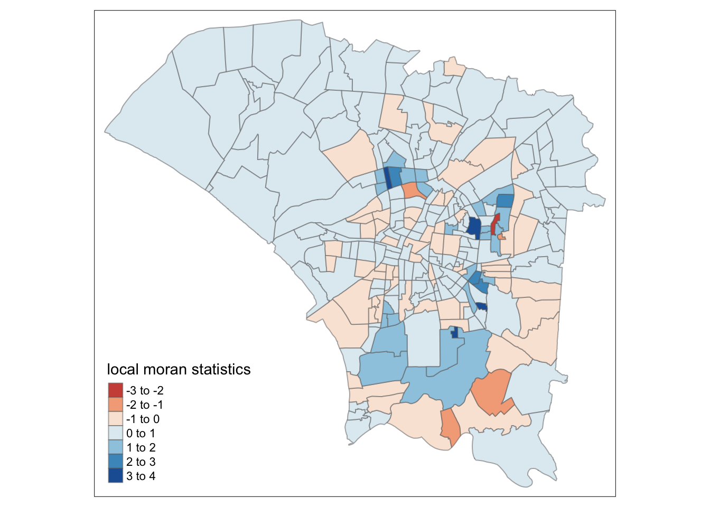
The positive local Moran’s I value indicates spatial clustering, suggesting that areas with similar values are close to each other on the map. Conversely, a negative local Moran’s I value indicates spatial dispersion or spatial outliers.
Therefore, the map visualizes the areas with positive and negative local Moran’s I values, highlighting spatial clustering and spatial dispersion, respectively. Areas with positive values indicate spatial clustering, where similar values are clustered together geographically. Conversely, areas with negative values indicate spatial dispersion, where dissimilar values are scattered across the map. Thus, the map helps identify spatial patterns of similarity and dissimilarity in the dataset.
5.1.3 Mapping local Moran’s I p-values
The choropleth shows there is evidence for both positive and negative Ii values. However, it is useful to consider the p-values for each of these values, as consider above.
The code chunks below produce a choropleth map of Moran’s I p-values by using functions of tmap package.
tm_shape(village_sf.localMI) +
tm_fill(col = "Pr.Ii",
breaks=c(-Inf, 0.001, 0.01, 0.05, 0.1, Inf),
palette="-Blues",
title = "local Moran's I p-values") +
tm_borders(alpha = 0.5)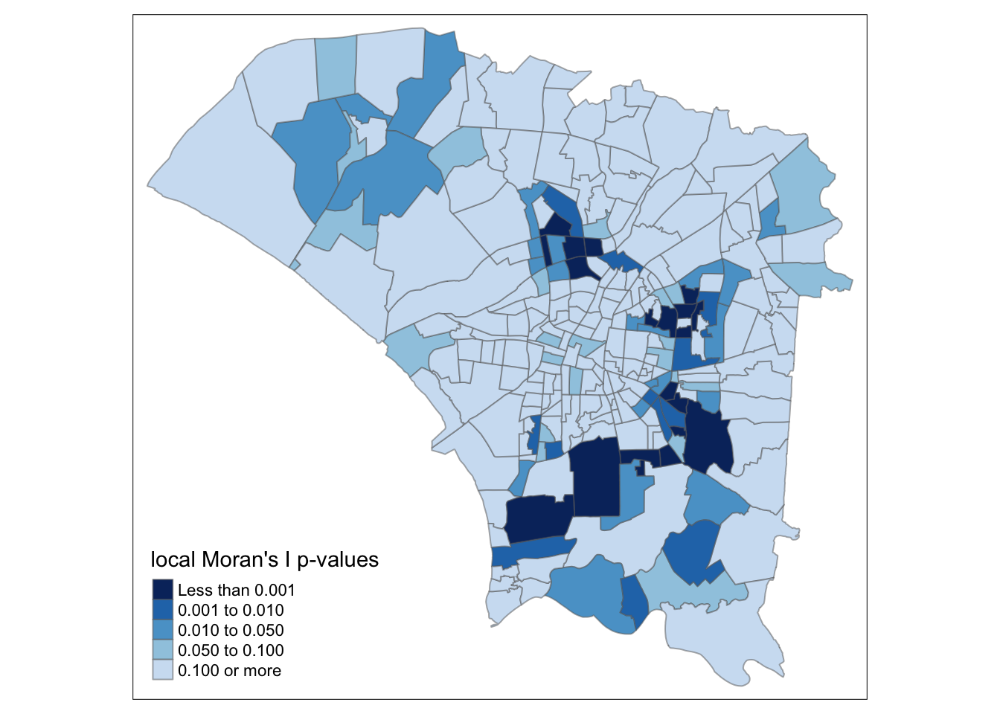
The thematic map reflects the spatial distribution of statistical significance regarding local Moran’s I values across various regions. Darker shades denote areas with lower p-values, indicating higher statistical significance, implying pronounced spatial clustering or outliers. Conversely, lighter-colored regions signify higher p-values, suggesting lower statistical significance and potentially indicating randomness or spatial independence.
In order to interpret the local moran value:
An outlier: significant and negative if location i is associated with relatively low values in surrounding locations.
A cluster: significant and positive if location i is associated with relatively high values of the surrounding locations.
The thematic map provides insights into the spatial distribution of dengue outbreak cases at a local level. It indicates that, across the study area, the occurrence of dengue cases exhibits spatial randomness. However, areas with higher Moran’s I p-values, representing increased spatial autocorrelation, tend to cluster together. This clustering pattern suggests that certain regions with elevated Moran’s I p-values are surrounded by neighboring areas exhibiting similar levels of spatial autocorrelation. Hence, these findings imply the presence of localized clusters within the study area, amidst an overall pattern of spatial randomness in dengue outbreak occurrences.
5.1.4 Mapping both local Moran’s I values and p-values
localMI.map <- tm_shape(village_sf.localMI) +
tm_fill(col = "Ii",
style = "pretty",
title = "local moran statistics") +
tm_borders(alpha = 0.5)
pvalue.map <- tm_shape(village_sf.localMI) +
tm_fill(col = "Pr.Ii",
breaks=c(-Inf, 0.001, 0.01, 0.05, 0.1, Inf),
palette="-Blues",
title = "local Moran's I p-values") +
tm_borders(alpha = 0.5)
tmap_arrange(localMI.map, pvalue.map, asp=1, ncol=2)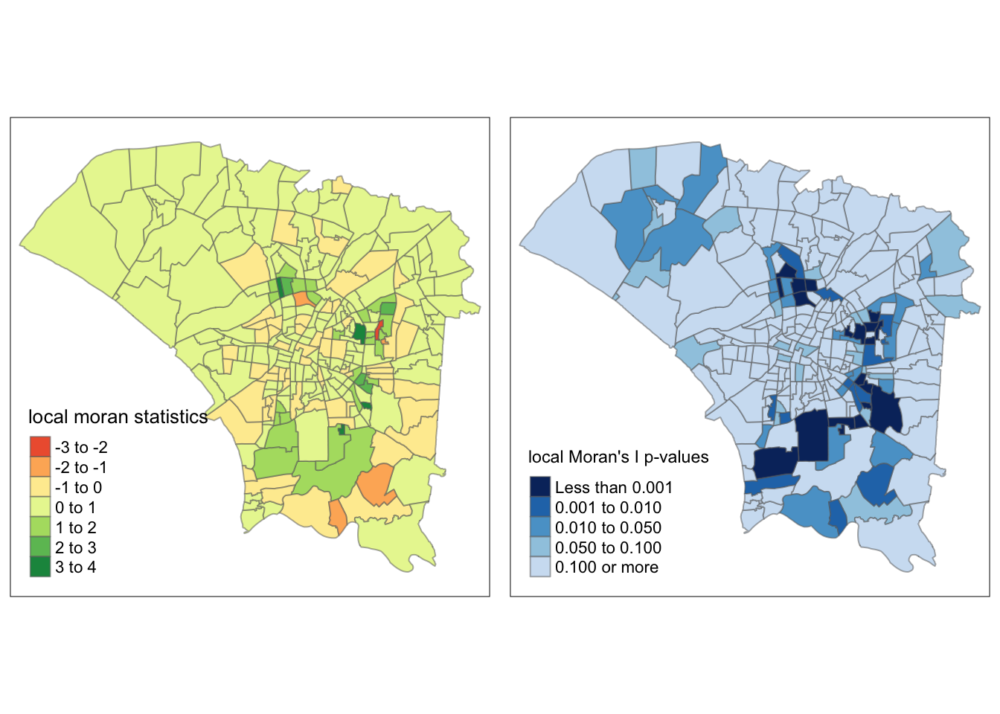
5.2 Creating a LISA Cluster Map
The LISA Cluster Map shows the significant locations color coded by type of spatial autocorrelation. The first step before we can generate the LISA cluster map is to plot the Moran scatterplot.
5.2.1 Plotting Moran scatterplot
nci <- moran.plot(village_sf$grp_cnt, rswm_q,
labels=as.character(village_sf$VILLENG),
xlab="Dengue Case Count 2023",
ylab="Spatially Lag Dengue Cases Count 2023")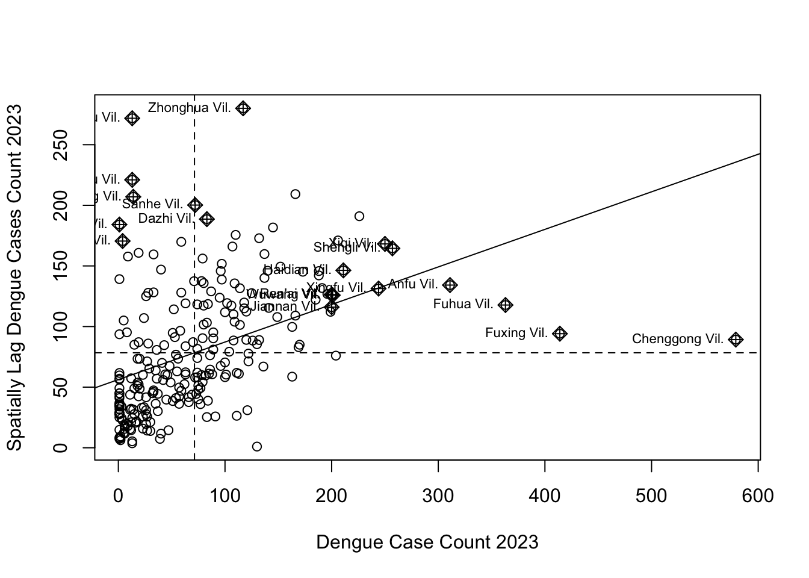
The plot is split into 4 quadrants. The top right corner belongs to areas that have a high number of dengue cases and are surrounded by other areas that have the average level of dengue cases. These are the high-high locations.
For example, Chenggong Village indicates a high number of dengue cases but is surrounded by areas with a lower level of dengue cases. However, Zhonghua Village indicates a lower number of dengue cases but is surrounded by areas with a higher level of dengue outbreak cases.
5.2.2 Plotting Moran scatterplot with standardised variable
village_sf$Z.grp_cnt <- scale(village_sf$grp_cnt) %>%
as.vector The as.vector() added to the end is to make sure that the data type we get out of this is a vector, that map neatly into out dataframe.
The following code chunk plots the Moran scatterplot again by using the code chunk below.
nci2 <- moran.plot(village_sf$Z.grp_cnt, rswm_q,
labels=as.character(village_sf$VILLENG),
xlab="z-Dengue Case Count 2023",
ylab="Spatially Lag z-Dengue Cases Count 2023")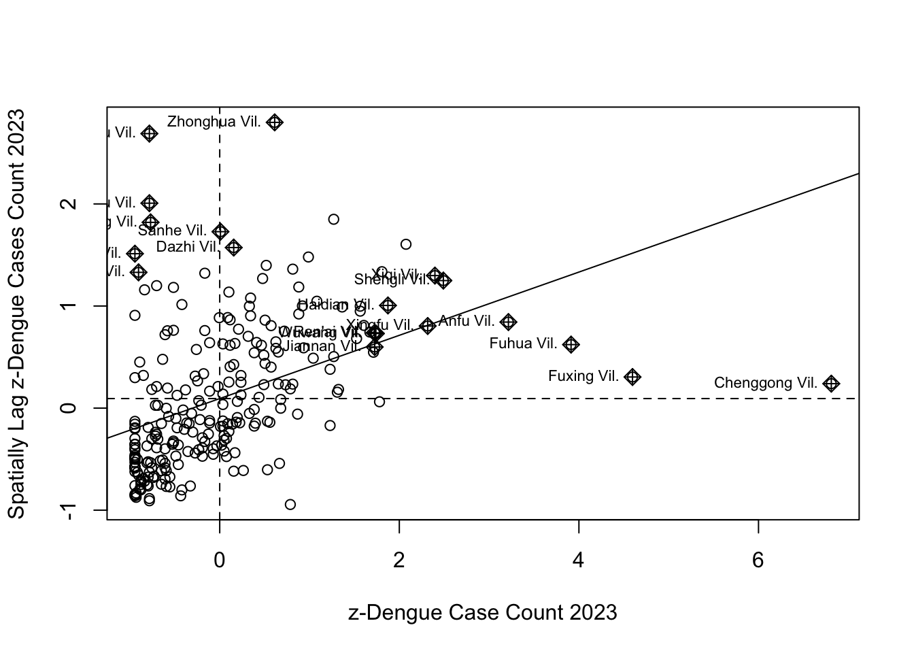
5.2.3 Preparing LISA map classes
The code chunks below show the steps to prepare a LISA cluster map.
quadrant <- vector(mode="numeric",length=nrow(localMI))Next, derives the spatially lagged variable of interest and centers the spatially lagged variable around its mean.
village_sf$lag_grp_cnt <- lag.listw(rswm_q, village_sf$grp_cnt)
DV <- village_sf$lag_grp_cnt - mean(village_sf$lag_grp_cnt) This is follow by centering the local Moran’s around the mean.
LM_I <- localMI[,1] - mean(localMI[,1])Next, we will set a statistical significance level for the local Moran.
signif <- 0.05These four command lines define the low-low (1), low-high (2), high-low (3) and high-high (4) categories.
quadrant[DV <0 & LM_I>0] <- 1
quadrant[DV >0 & LM_I<0] <- 2
quadrant[DV <0 & LM_I<0] <- 3
quadrant[DV >0 & LM_I>0] <- 4 Lastly, places non-significant Moran in the category 0.
quadrant[localMI[,5]>signif] <- 0quadrant <- vector(mode="numeric",length=nrow(localMI))
village_sf$lag_grp_cnt <- lag.listw(rswm_q, village_sf$grp_cnt)
DV <- village_sf$lag_grp_cnt - mean(village_sf$lag_grp_cnt)
LM_I <- localMI[,1]
signif <- 0.05
quadrant[DV <0 & LM_I>0] <- 1
quadrant[DV >0 & LM_I<0] <- 2
quadrant[DV <0 & LM_I<0] <- 3
quadrant[DV >0 & LM_I>0] <- 4
quadrant[localMI[,5]>signif] <- 05.2.4 Plotting LISA map
The following code chunk generates a thematic map displaying the spatial clustering patterns of dengue cases using Local Indicators of Spatial Association (LISA) analysis.
village_sf.localMI$quadrant <- quadrant
colors <- c("#ffffff", "#2c7bb6", "#abd9e9", "#fdae61", "#d7191c")
clusters <- c("insignificant", "low-low", "low-high", "high-low", "high-high")
tm_shape(village_sf.localMI) +
tm_fill(col = "quadrant",
style = "cat",
palette = colors[c(sort(unique(quadrant)))+1],
labels = clusters[c(sort(unique(quadrant)))+1],
popup.vars = c("")) +
tm_view(set.zoom.limits = c(11,17)) +
tm_borders(alpha=0.5)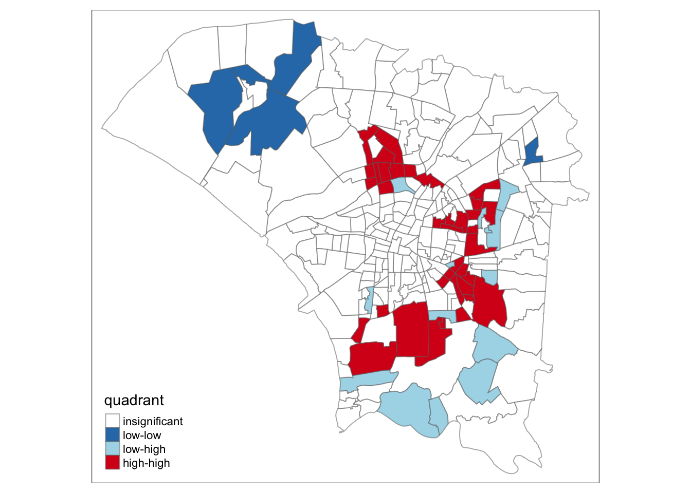
From the graph, we can infer the areas that according to their classified color:
White (Insignificant): These areas represent locations where the local spatial autocorrelation is not statistically significant.
Blue (Low-Low): These areas indicate clusters where low values of the variable of interest are surrounded by neighboring areas with similarly low values.
Light Blue (Low-High): These areas denote locations where low values of the variable of interest are surrounded by neighboring areas with high values.
Red (High-High): These areas represent clusters where high values of the variable of interest are surrounded by neighboring areas with similarly high values.
The map shows that the
grpcnt <- qtm(village_sf, "grp_cnt")
village_sf.localMI$quadrant <- quadrant
colors <- c("#ffffff", "#2c7bb6", "#abd9e9", "#fdae61", "#d7191c")
clusters <- c("insignificant", "low-low", "low-high", "high-low", "high-high")
LISAmap <- tm_shape(village_sf.localMI) +
tm_fill(col = "quadrant",
style = "cat",
palette = colors[c(sort(unique(quadrant)))+1],
labels = clusters[c(sort(unique(quadrant)))+1],
popup.vars = c("")) +
tm_view(set.zoom.limits = c(11,17)) +
tm_borders(alpha=0.5)
tmap_arrange(grpcnt, LISAmap,
asp=1, ncol=2)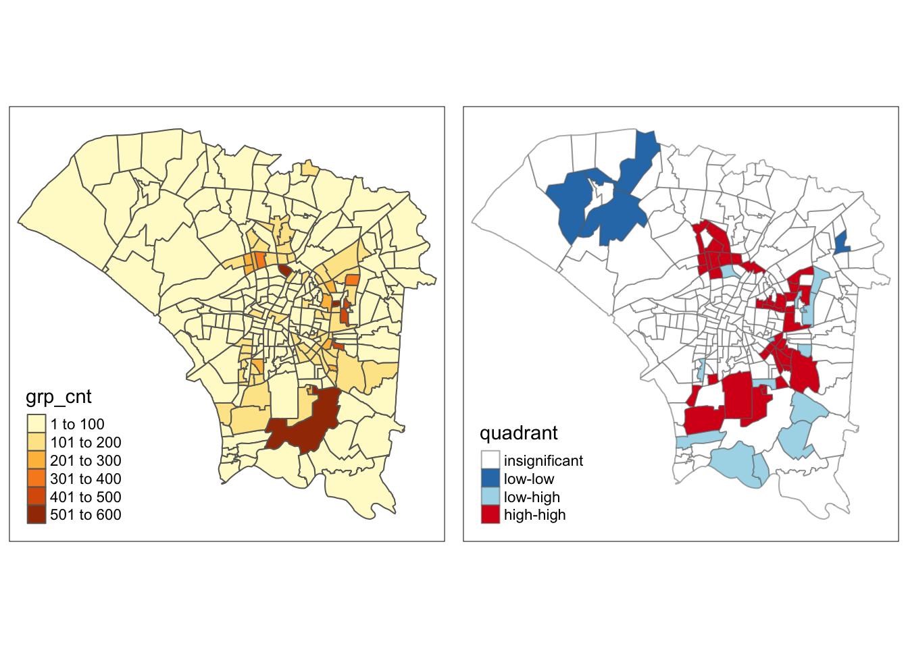
dengue_sf_tibble <- as_tibble(dengue_sf)The following code chunk calculates local Moran’s I statistics for each observation using the local_moran function.
5.3 Computing local Moran’s I (using local_moran() function)
in this alternative method, the local_moran() function from the spdep package is utilized. This function directly computes the local Moran’s I statistic for each observation in the dataset.
lisa <- wm_q %>%
mutate(local_moran = local_moran(
grp_cnt, nb, wt, nsim = 99),
.before = 1) %>%
unnest(local_moran)6.2 Visualising local Moran’s I
The following code chunk generates a thematic map visualizing the local Moran’s I statistics of the “Cases Count” variable.
tmap_mode("plot")
tm_shape(lisa) +
tm_fill("ii") +
tm_borders(alpha = 0.5) +
tm_view(set.zoom.limits = c(6,8)) +
tm_layout(main.title = "local Moran's I of Cases Count",
main.title.size = 0.8)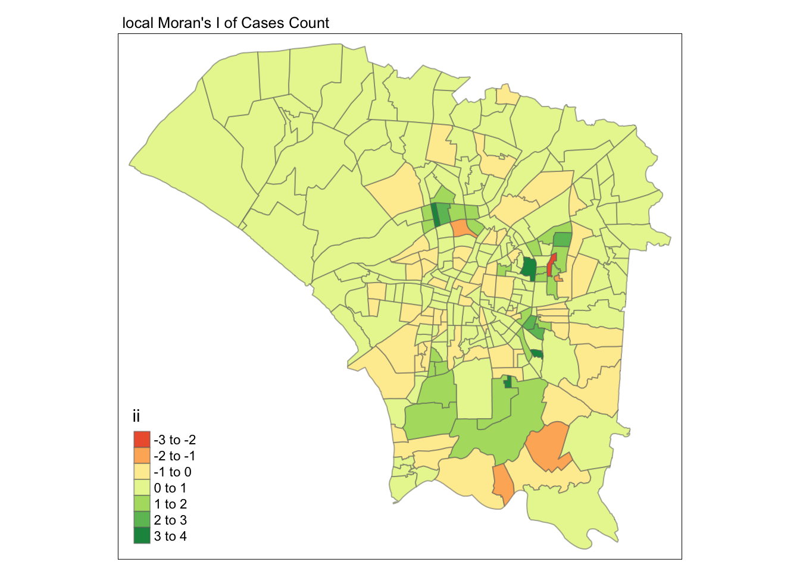
From the map, it can be observed that the areas in green (positive values) of the local Moran’s I statistic suggest spatial clustering. This suggests that neighbouring areas tend to have similar values.
In contrast, the areas in red/orange (negative values) suggest spatial dispersion or dissimilarity. This suggests that neighboring areas tend to have dissimilar values.
From the map, it can be observed that the majority of the regions fall into the range of 0-1 and 0-(-1), thus suggesting that the observations exhibit spatial randomness or no spatial clustering. However, there are more regions that exhibits spatial clustering in comparison to regions that do not.
The following map the p-values associated with the local Moran’s I statistic. These p-values indicate the significance of spatial autocorrelation.
tmap_mode("plot")
tm_shape(lisa) +
tm_fill("p_ii_sim") +
tm_borders(alpha = 0.5) +
tm_layout(main.title = "p-value of local Moran's I",
main.title.size = 0.8)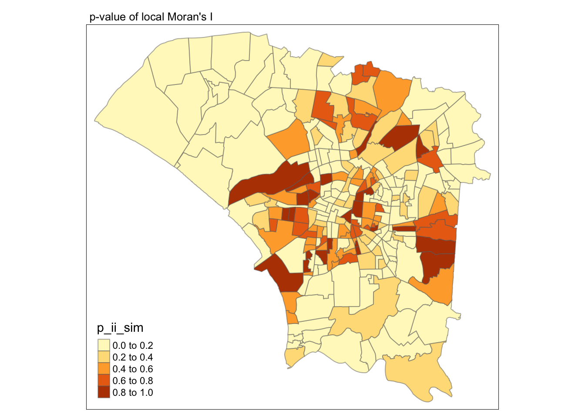
The lower p-values suggest stronger evidence against the null hypothesis of spatial randomness, indicating significant spatial clustering or dispersion. Conversely, higher p-values suggest weaker evidence against the null hypothesis, indicating spatial randomness or non-significant spatial patterns.
tmap_mode("plot")
map1 <- tm_shape(lisa) +
tm_fill("ii") +
tm_borders(alpha = 0.5) +
tm_view(set.zoom.limits = c(6,8)) +
tm_layout(main.title = "local Moran's I of GDPPC",
main.title.size = 0.8)
map2 <- tm_shape(lisa) +
tm_fill("p_ii",
breaks = c(0, 0.001, 0.01, 0.05, 1),
labels = c("0.001", "0.01", "0.05", "Not sig")) +
tm_borders(alpha = 0.5) +
tm_layout(main.title = "p-value of local Moran's I",
main.title.size = 0.8)
tmap_arrange(map1, map2, ncol = 2)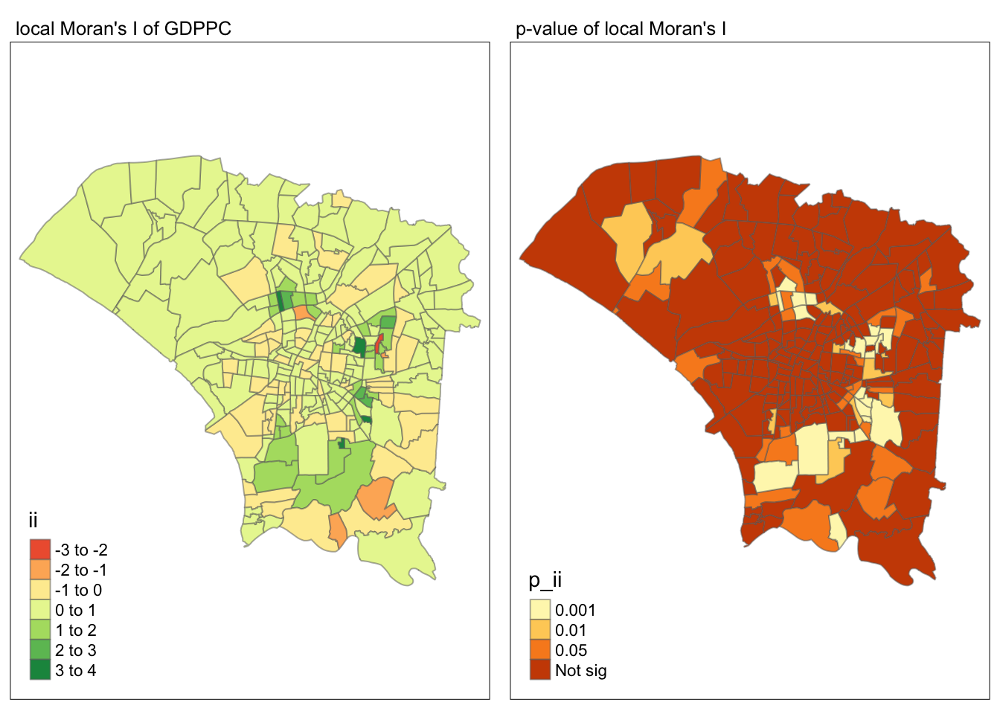
lisa_sig <- lisa %>%
filter(p_ii < 0.05)
tmap_mode("plot")
tm_shape(lisa) +
tm_polygons() +
tm_borders(alpha = 0.5) +
tm_shape(lisa_sig) +
tm_fill("mean") +
tm_borders(alpha = 0.4)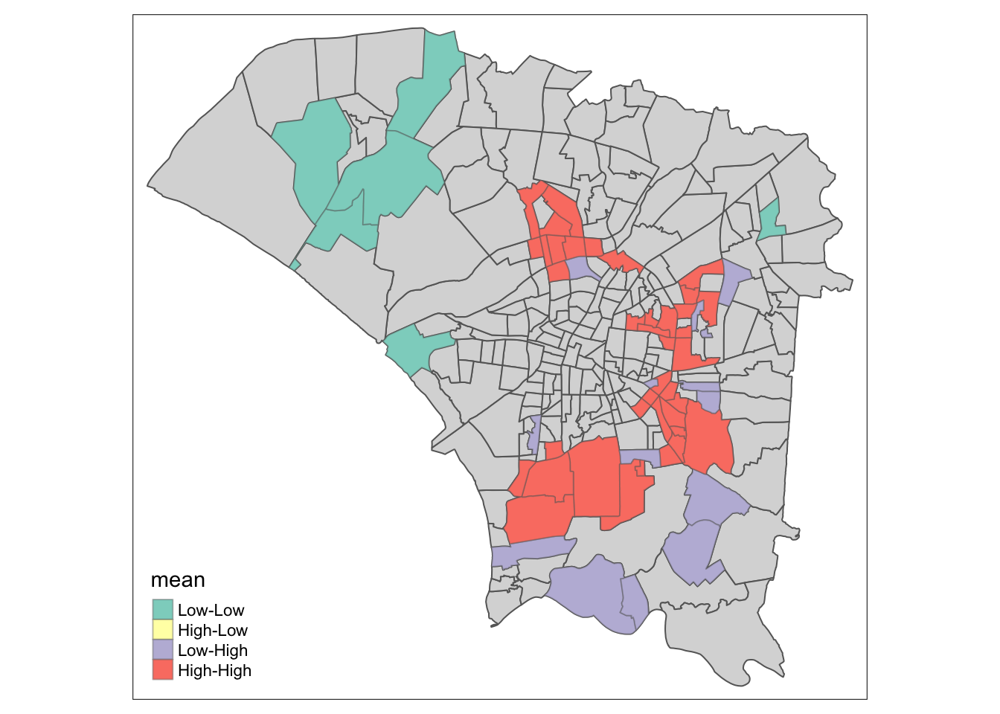
# Convert polygons/multipolygons to points
village_sf$geometry_point <- st_centroid(village_sf$geometry)
# Verify the result
print(village_sf)Simple feature collection with 249 features and 4 fields
Active geometry column: geometry
Geometry type: GEOMETRY
Dimension: XY
Bounding box: xmin: 120.0627 ymin: 22.89401 xmax: 120.2925 ymax: 23.09144
Geodetic CRS: TWD97
# A tibble: 249 × 6
VILLENG grp_cnt geometry Z.grp_cnt lag_grp_cnt
* <chr> <int> <POLYGON [°]> <dbl> <dbl>
1 Andong Vil. 83 ((120.2164 23.0404, 120.2154 23.04… 0.156 103.
2 Anfu Vil. 311 ((120.1932 23.0294, 120.1929 23.02… 3.21 134.
3 Anhe Vil. 86 ((120.2258 23.04424, 120.2219 23.0… 0.196 76.3
4 Ankang Vil. 102 ((120.2269 23.01413, 120.2274 23.0… 0.411 119.
5 Anqing Vil. 109 ((120.2113 23.04414, 120.2111 23.0… 0.505 104
6 Anshun Vil. 35 ((120.2136 23.05601, 120.2136 23.0… -0.488 36.3
7 Anxi Vil. 141 ((120.2123 23.03689, 120.212 23.03… 0.934 115.
8 Bao'an Vil. 33 ((120.2304 22.93544, 120.2301 22.9… -0.515 128.
9 Beihua Vil. 1 ((120.2034 23.00257, 120.2032 23.0… -0.944 45
10 Beimen Vil. 8 ((120.2176 23.02032, 120.2173 23.0… -0.850 95.2
# ℹ 239 more rows
# ℹ 1 more variable: geometry_point <POINT [°]>wm_idw <- village_sf %>%
mutate(nb = st_contiguity(geometry),
wts = st_inverse_distance(nb, geometry_point,
scale = 1,
alpha = 1),
.before = 1)HCSA <- wm_idw %>%
mutate(local_Gi = local_gstar_perm(
grp_cnt, nb, wt, nsim = 99),
.before = 1) %>%
unnest(local_Gi)tmap_mode("plot")
tm_shape(HCSA) +
tm_fill("gi_star") +
tm_borders(alpha = 0.5) +
tm_view(set.zoom.limits = c(6,8))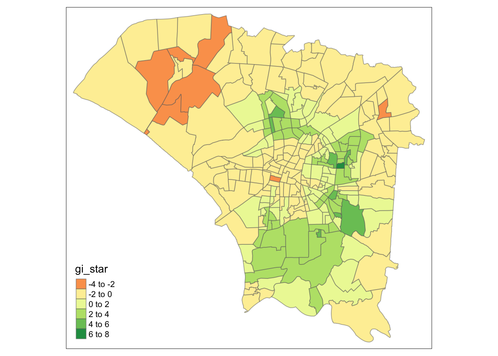
tmap_mode("plot")
tm_shape(HCSA) +
tm_fill("p_sim") +
tm_borders(alpha = 0.5)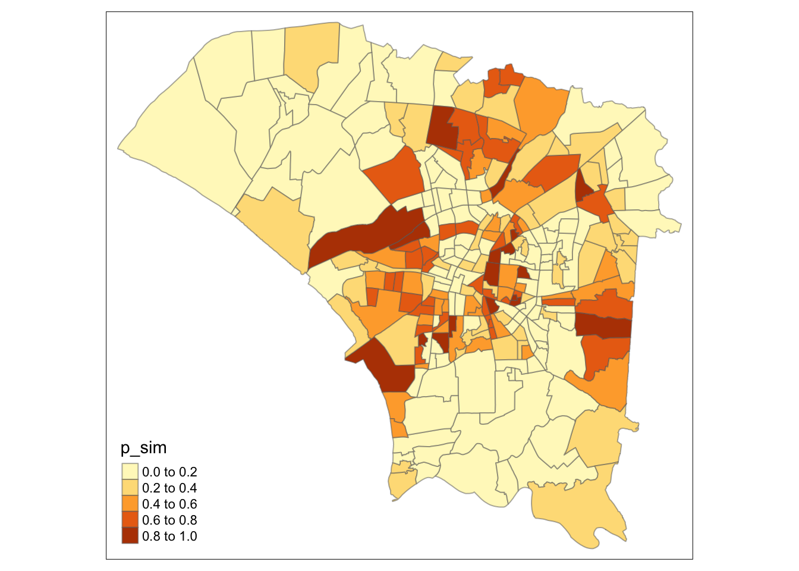
tmap_mode("plot")
map1 <- tm_shape(HCSA) +
tm_fill("gi_star") +
tm_borders(alpha = 0.5) +
tm_view(set.zoom.limits = c(6,8)) +
tm_layout(main.title = "Gi* of GDPPC",
main.title.size = 0.8)
map2 <- tm_shape(HCSA) +
tm_fill("p_value",
breaks = c(0, 0.001, 0.01, 0.05, 1),
labels = c("0.001", "0.01", "0.05", "Not sig")) +
tm_borders(alpha = 0.5) +
tm_layout(main.title = "p-value of Gi*",
main.title.size = 0.8)
tmap_arrange(map1, map2, ncol = 2)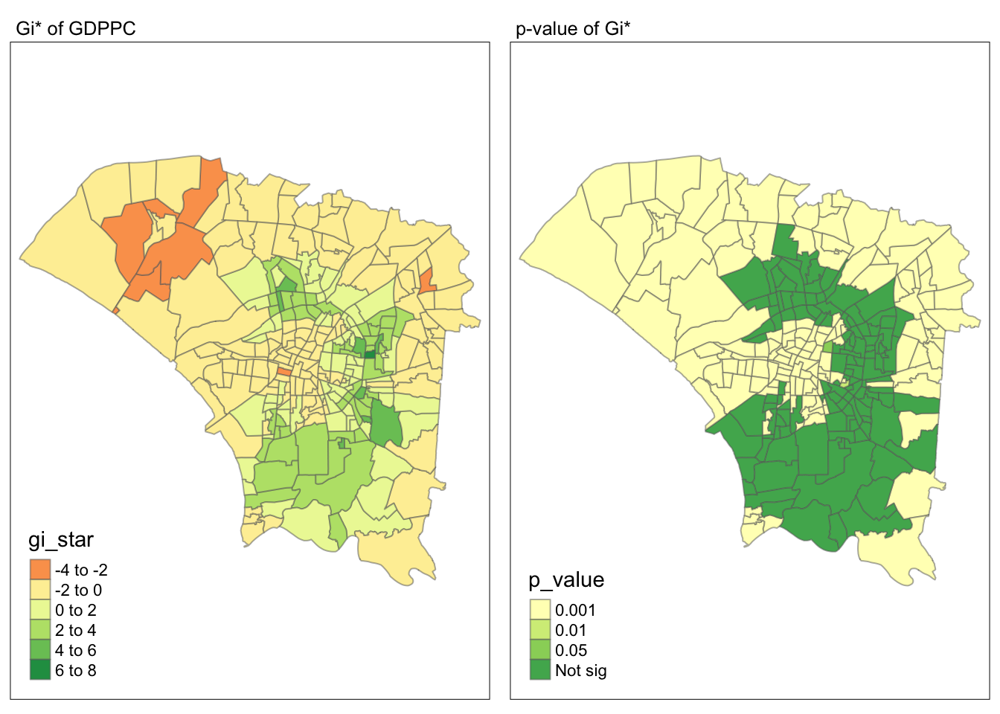
HCSA_sig <- HCSA %>%
filter(p_sim < 0.05)
tmap_mode("plot")
tm_shape(HCSA) +
tm_polygons() +
tm_borders(alpha = 0.5) +
tm_shape(HCSA_sig) +
tm_fill("gi_star") +
tm_borders(alpha = 0.4)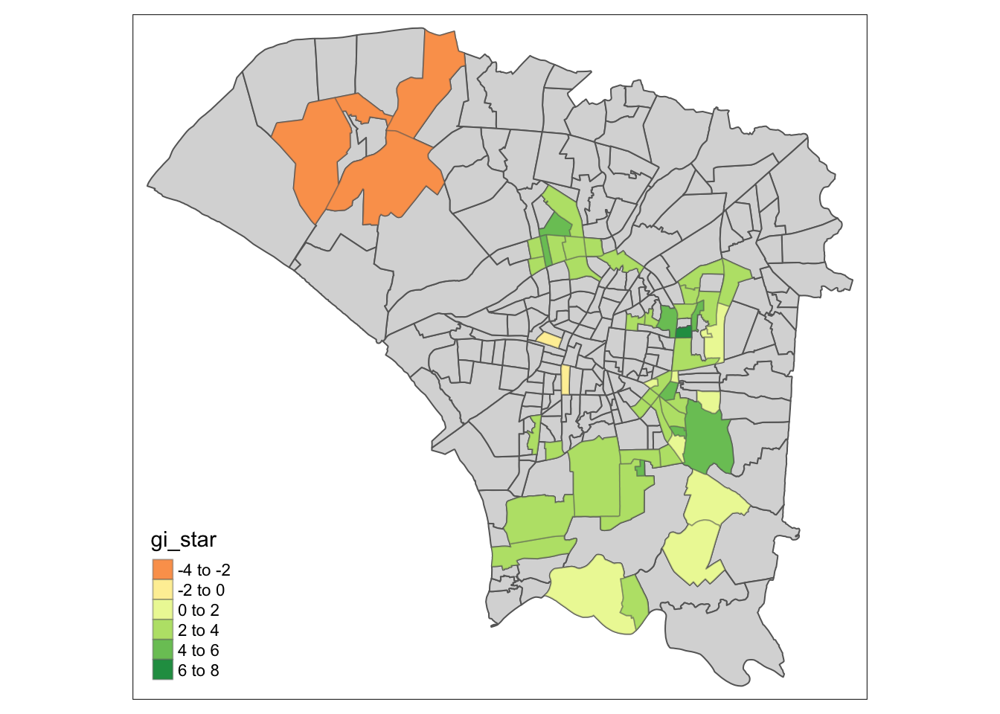
6 Emerging Hot Spot Analysis: sfdep methods
6.1 Creating a Time Series Cube
grp_cnt_st <- spacetime(dengue_sf_tibble, village_sf,
.loc_col = "VILLENG",
.time_col = "week")is_spacetime_cube(grp_cnt_st)[1] TRUE# Convert polygons/multipolygons to points
grp_cnt_st$geometry_point <- st_centroid(grp_cnt_st$geometry)6.2 Computing Gi*
The code chunk below will be used to identify neighbors and to derive an inverse distance weights.
grp_cnt_nb <- grp_cnt_st %>%
activate("geometry") %>%
mutate(nb = include_self(st_contiguity(geometry)),
wt = st_inverse_distance(nb, geometry_point,
scale = 1,
alpha = 1),
.before = 1) %>%
set_nbs("nb") %>%
set_wts("wt")These new columns are used to manually calculate the local Gi* for each location. We can do this by grouping by week and using local_gstar_perm() of sfdep package. After which, we use unnest() to unnest gi_star column of the newly created gi_starts data.frame.
gi_stars <- grp_cnt_nb %>%
group_by(week) %>%
mutate(gi_star = local_gstar_perm(
grp_cnt, nb, wt)) %>%
tidyr::unnest(gi_star)6.3 Mann-Kendall Test
With these Gi* measures we can then evaluate each location for a trend using the Mann-Kendall test. The code chunk below uses Sanmin Vil.
smv <- gi_stars %>%
ungroup() %>%
filter(VILLENG == "Sanmin Vil.") |>
select(VILLENG, week, gi_star)ggplot(data = smv,
aes(x = week,
y = gi_star)) +
geom_line() +
theme_light()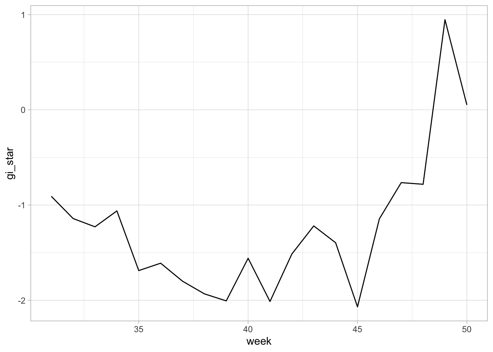
p <- ggplot(data = smv,
aes(x = week,
y = gi_star)) +
geom_line() +
theme_light()
ggplotly(p)#install.packages("Kendall")smv %>%
summarise(mk = list(
unclass(
Kendall::MannKendall(gi_star)))) %>%
tidyr::unnest_wider(mk)# A tibble: 1 × 5
tau sl S D varS
<dbl> <dbl> <dbl> <dbl> <dbl>
1 0.179 0.284 34 190. 950In the above result, sl is the p-value. This result tells us that there is an upward but insignificant trend.
Now to replicate this for each location by using group_by() of dplyr package.
ehsa <- gi_stars %>%
group_by(VILLENG) %>%
summarise(mk = list(
unclass(
Kendall::MannKendall(gi_star)))) %>%
tidyr::unnest_wider(mk)6.4 Arrange to show significant emerging hot/cold spots
emerging <- ehsa %>%
arrange(sl, abs(tau)) %>%
slice(1:5)6.5 Performing Emerging Hotspot Analysis
Lastly, to perform EHSA analysis by using emerging_hotspot_analysis() of sfdep package. It takes a spacetime object x (i.e. grp_cnt_st), and the quoted name of the variable of interest (i.e. grp_cnt) for .var argument. The k argument is used to specify the number of time lags which is set to 1 by default. Lastly, nsim map numbers of simulation to be performed.
grpcnt_st <- grp_cnt_st[, !colnames(grp_cnt_st) %in% "VILLENG", drop = FALSE]#ehsa <- emerging_hotspot_analysis(
# x = grpcnt_st,
# .var = "grp_cnt",
# k = 1,
# nsim = 99
#)note: i couldnt resolve the error here…